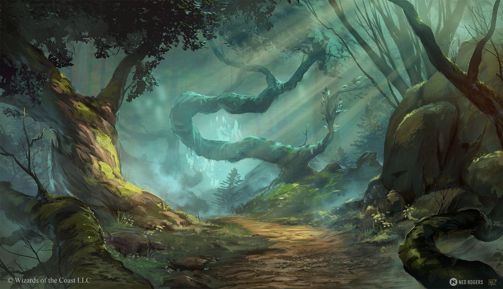

{{ selectedCampaign.name }}


{{ selectedCampaign.description }}
Vous avez débloqué et créé toutes les campagnes (message à changer)
{{ selectedCampaign.description }}
Vous avez débloqué et créé toutes les campagnes (message à changer)
Chargement...